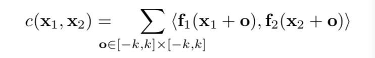
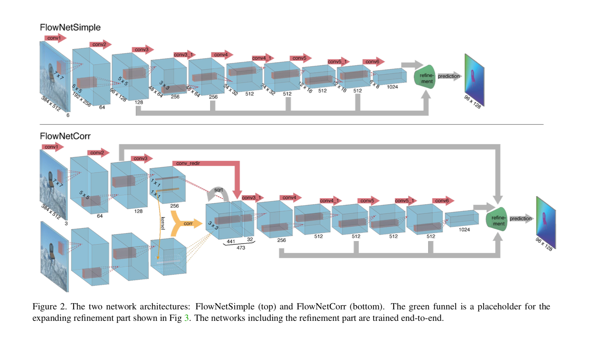
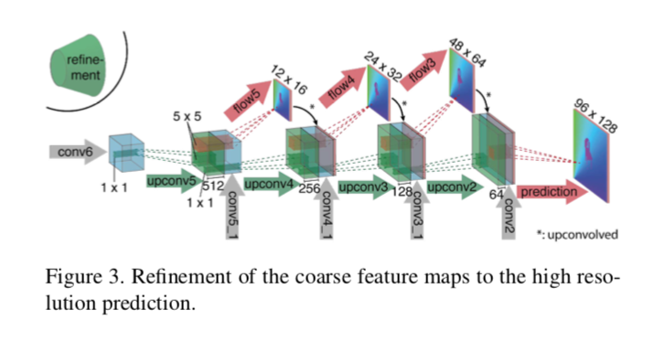
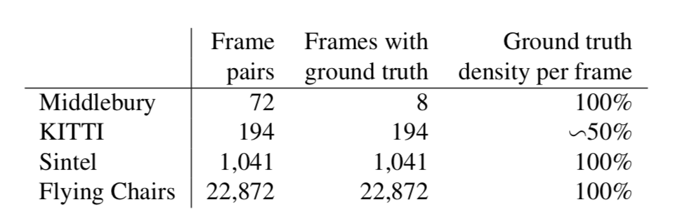
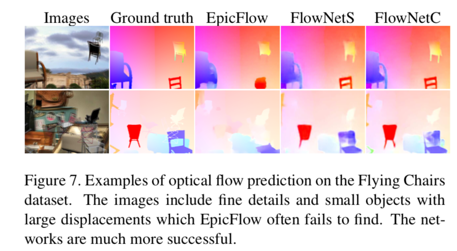

Flownet: Learning optical flow with convolutional networks
URL:http://openaccess.thecvf.com/content_iccv_2015/papers/Dosovitskiy_FlowNet_Learning_Optical_ICCV_2015_paper.pdf
这是一篇ICCV2015的论文，主要是利用CNN来进行光流的计算，在视频的相关应用中通常会涉及到光流的概念，可参考Stanford CS131了解相关内容。论文主要提出了两种CNN结构：
- FlowNetSimple：直接将输入的两帧叠加到一起输入网络，经过一段CNN网络后得到最后的feature map， 但Pooling操作会使feature map的size通常小于原图，所以论文中通过refinement实现到原图size的转换。
- FlowNetCorr：不同于前者，这个网络模型是将两帧分别输入网络，经过CNN特征提取后将两者的feature map合并到一起，合并的方式是利用correlation layer ，correlation layer对输入的两个feature map进行类似卷积的操作，假设区块大小为(2k + 1) * (2k + 1)，两个feature map中对应的中心点为x1、x2，correlation值就按以下公式计算，与卷积不同的地方就是没有filter，而是两个区块直接相乘。如果约束x1在另一个feature map上的相关范围为D，那么correlation layer就可以得到w x h x D^2大小的输出。之后再经过一段CNN网络进行特征抽取。
 - 两个模型在最后阶段都会涉及到refinement，refinement部分主要通过upconvolutional 操作来扩展feature map，只是每一层的输入除了上一层的feature map之外还会结合特征抽取部分相同size的feature map，这样在考虑High-Level特征信息的同时也会考虑局部的相关信息。


数据方面因为没有足够的训练数据，作者构造了Flying Chairs数据集，图片背景来自Flickr，前景为3D椅子模型。

最后的效果图：

本博客所有文章除特别声明外，均采用 CC BY-NC-SA 4.0 许可协议。转载请注明来自 Out of Memory！